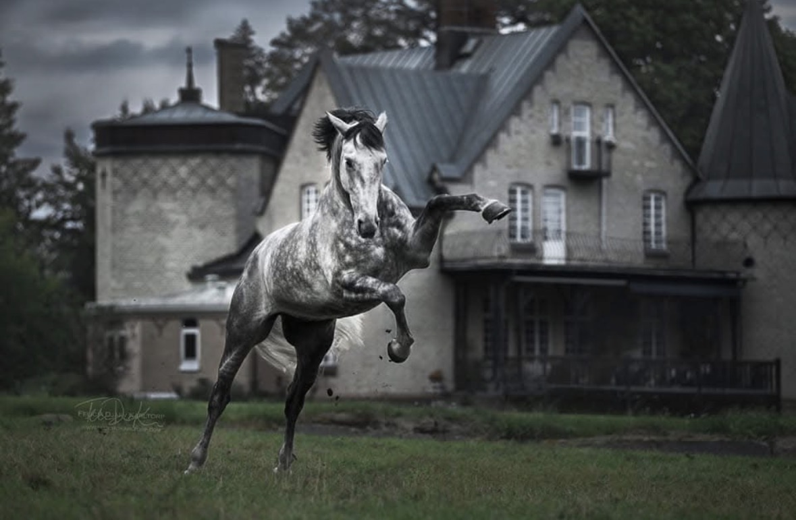

Välkommen till PURE RAZA ESPAÑOLA
Lär dig om den spanska hästrasen PRE, som är känd för sin elegans, intelligens och långa historia. Här får du lära dig mer om rasens ursprung, dess egenskaper och några av de hästar som gjort avtryck inom ridsporten.
PRE-hästen i bilder

Den spanska hästens